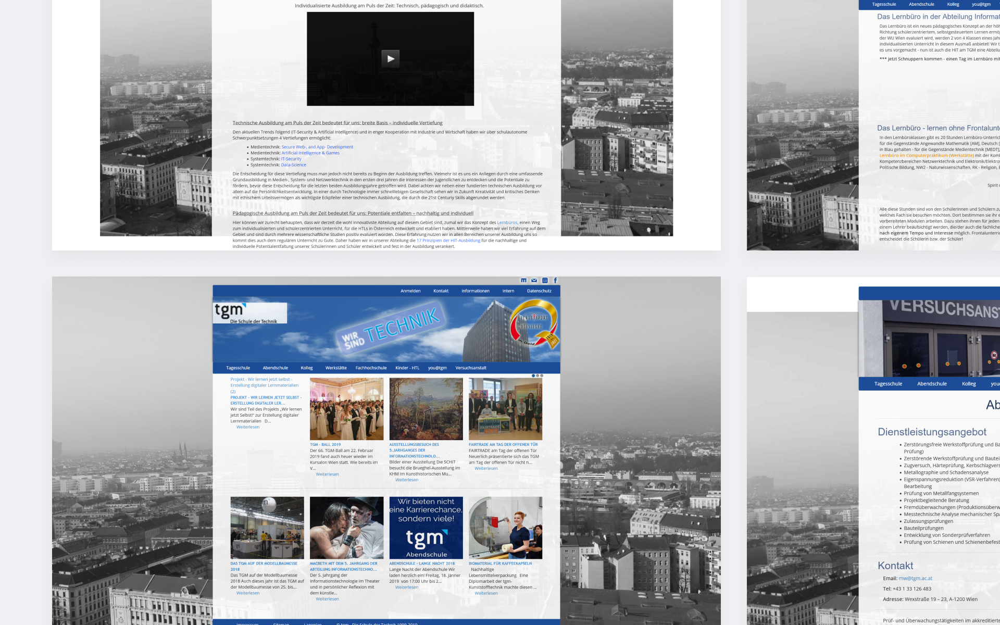
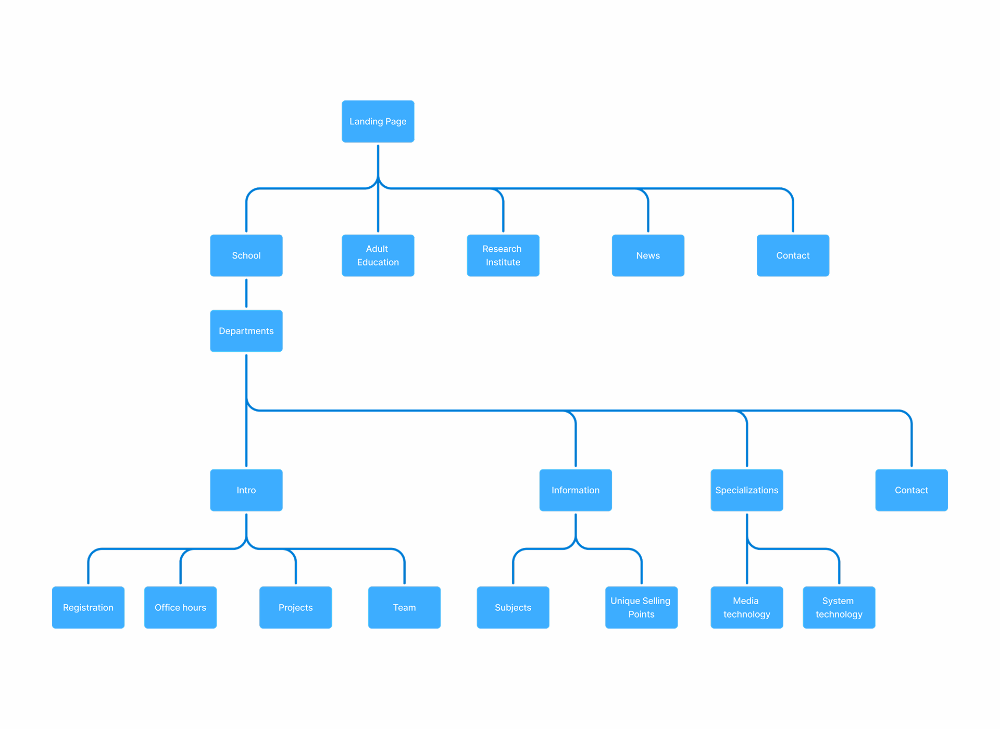
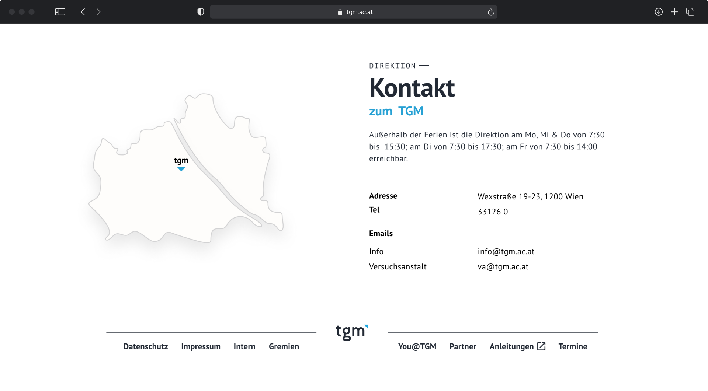
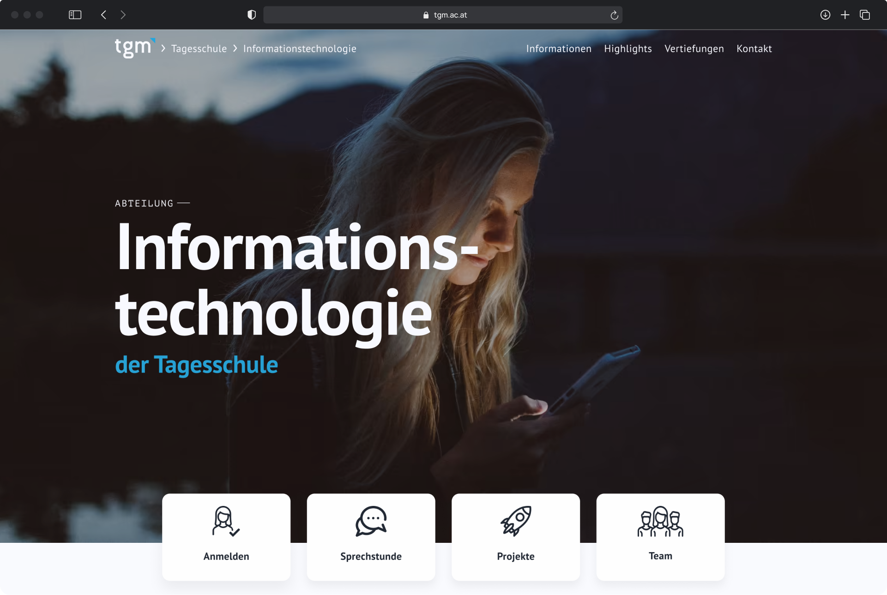
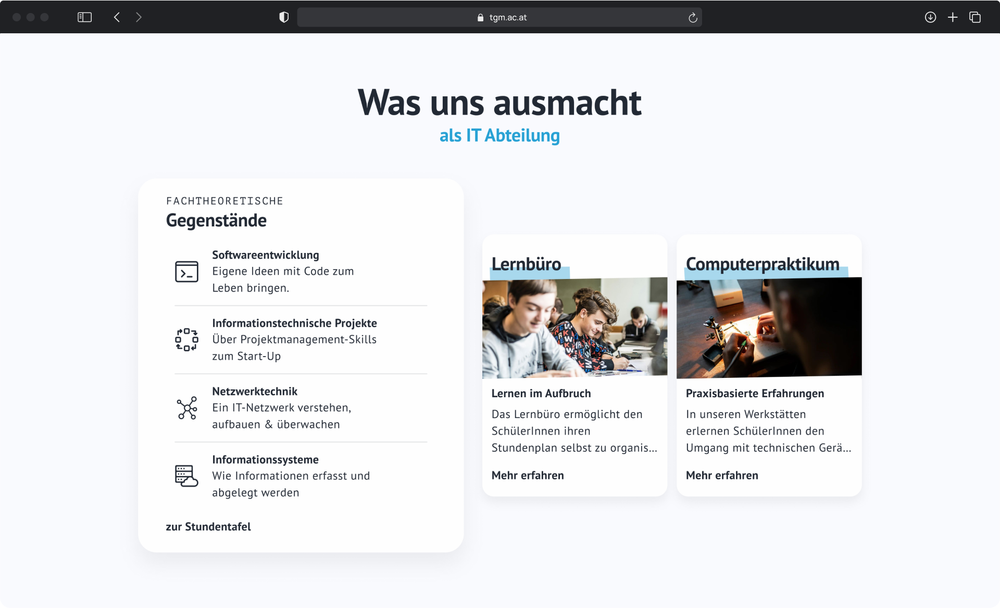
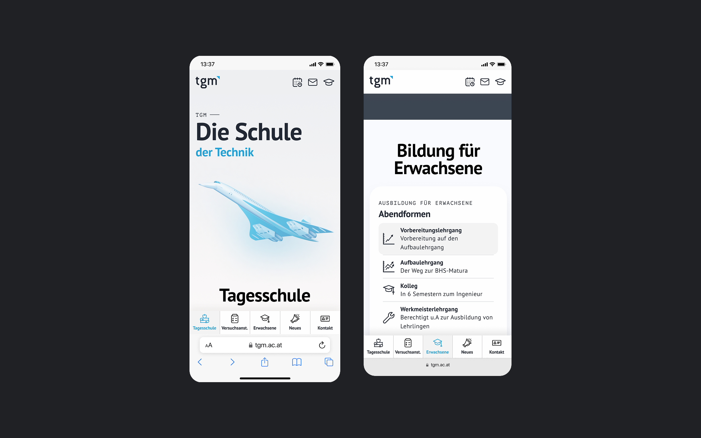

TGM Redesign
Role
Lead UX Designer
Responsibilities
User Research, User Testing, Wireframing, Prototyping
Team
2 Web Developers, Backend Engineer, Project Manager
Timeline
1.5 years (2020 - 2021)
"Our school's website looks outdated. It's barely readable on my phone and I just can't find what I'm looking for."
Pictures before Redesign
One of Vienna's most renowned teaching and experimental institutions
TGM is one of Vienna's most renowned technical teaching and experimental institutions. It offers education programs for youth students after eighth grade and extensive adult education. The institution's accredited experimental center offers practical testing and development, connecting education with industry and research.
I was tasked with being the lead designer of this project. I mainly worked in close collaboration with one of the web-developers in our team to create a cohesive UX/UI and make the product visually appealing.
Focusing on the future students and their parents
Target Demographic: Future students interested in a technical education and their parents who want to learn about the curriculum the school offers.
Tackling outdated design, hard to find content and mobile friction
After user interviews the following pain points were identified:
- Outdated design, especially for a school with a focus on education
- Important content is rather difficult to find
- Poor mobile usability and responsiveness
Putting education and current events first while designing for longevity
The biggest emphasis will be put on the education the school offers, both in terms of day school and adult education. News and current events will be highlighted more to inform people about opportunities to get to know the school better, such as open door days, etc. In addition, the redesign will be focusing on building an experience that, even without frequent redesigns, will look fresh and modern for a long time.
How do we represent the different departments under one brand image?
The school is at the forefront of the page. For a majority of users it is the most relevant section on the website. The departments are displayed on cards and will show a short description on hover.
We considered going with unique colours for each department or choosing icons, but in the end we decided on icons for multiple reasons. For two reasons mainly, because they convey more information at a glance and are more versatile to include in a larger variety of different designs.
News and current events are displayed horizontally. The newest cards will be closest to the front. On hover buttons to scroll the cards to the right and left will appear to give the user multiple ways to navigate the cards. The other methods are dragging and shift + scrolling.
 The subpage of each department has a banner in the background. Right below it the cards allow users to register, look for office hours, view finished projects of students and see the team of teachers working at the department.
 What I'd like to improve on
Things I would like to approach differently next time are:
- Work closer with the development team to reduce discrepancies between mockups and final product
- Validate assumptions with more extensive testing cycles
- Broader, more international and better documented competitive analysis
Looking back
The rebrand of the TGM website has been one of the largest projects I have worked on to date. With a busy timeline, I had expected the project to be relatively difficult, because it had to unify such a large organization and many different people under a single brand.
I am quite happy to say that even with the challenges we faced, we were able to deliver a redesign that accomplishes the goals we were set on and helps people to make better informed decisions about their education and future.